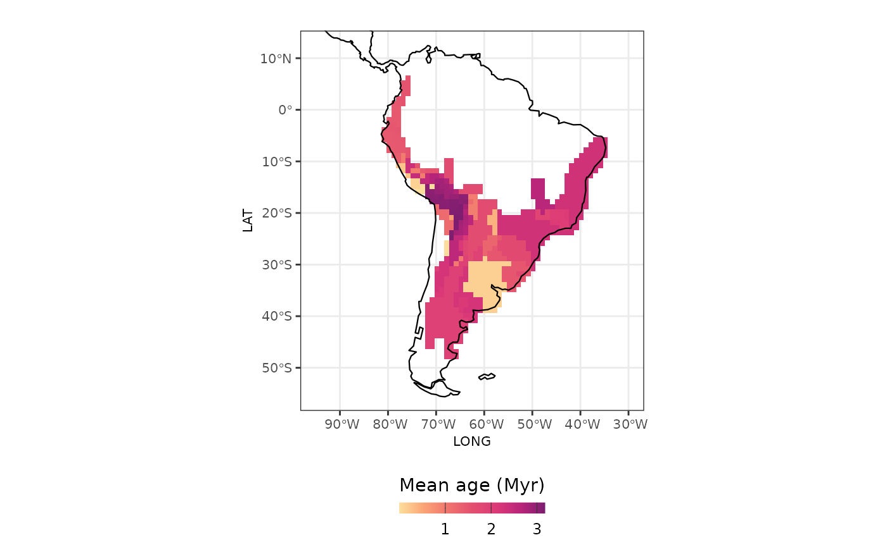
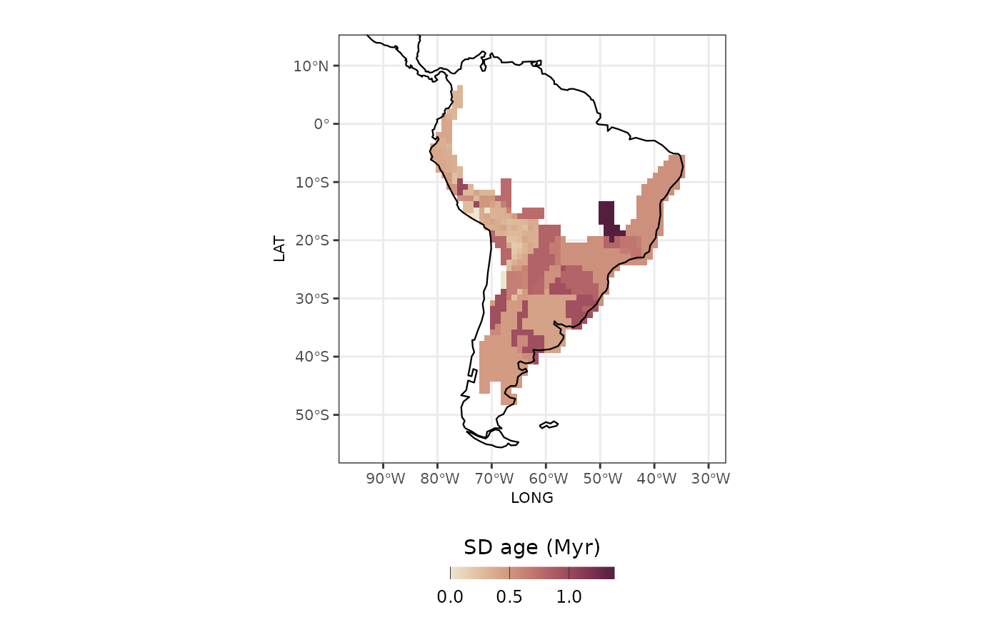

Using Biogeographical Stochastic Mapping on Herodotools
bsm_analysis.RmdTo evaluate the imprints of historical processes on assemblages Herodotools has based its assessments of historical events on the ancestral area reconstruction. Here, we use the Biogeographical Stochastic Mapping to account for uncertainty in the ancestral area reconstruction as well as to provide a more precise measurements of the timing of the events.
The Biogeographical Stochastic Mapping (BSM) is a method implemented
in the BioGeoBEARS package (Dupin et al. 2017), which
uses the parameters of a biogeographical model (e.g. DEC model) to map
on the phylogenetic tree the ancestral area on cladogenetic and
anagenetic events. The function runBSM in the
BioGeoBEARS package uses a probabilistic model of
dispersal and vicariance to map the evolution of ancestral range along
the branches of the tree. Each map simulates the range evolution on the
phylogenetic tree by randomly assigning range area according to the
model’s parameters and the phylogeny. It allows you to observe the
variability and uncertainty of biogeographic history across multiple
runs.
We have included BSM into the Herodotools workflow and this article shows you how to use the new functionality.
Akodon data
We will use data from the genus Akodon to exemplify the workflow. In the article Using Herodotools to analyses of historical biogeography, we have defined the evolutionary regions, and estimated the biogeographical ancestral area. Here we will use those data to go further and run the BSM. After having the BSM results, we will walk you thought the steps to get calculate the assemblage metrics of in situ diversification, age of arrival, Phylogenetic Endemism and Phylogenetic Diversity, as well as the historical dispersal events from the assemblage level perspective.
Run Biogeographical Stochastic Mapping
# load the package -------------------------------------------------------------
library(Herodotools)
library(rnaturalearth)
library(sf)
#> Linking to GEOS 3.12.1, GDAL 3.8.4, PROJ 9.4.0; sf_use_s2() is TRUE
library(rcartocolor)
library(ggplot2)
# load the data ----------------------------------------------------------------
# phylogeny
data("akodon_newick")
# Assemblages
data("akodon_sites")
# Biogeographical Model (DEC)
data("resDEC")
# Paths to tree and geography files
tree_path <- system.file("extdata", "akodon.new", package = "Herodotools")
phyllip_path <- system.file("extdata", "geo_area_akodon.data", package = "Herodotools")To calculate the Stochastic Mapping you need to have the
Biogeographical Model, from which the model parameters will be
extracted. You need to inform also, the path to the phylogenetic tree
and the phyllip file used in the biogeographical model. Then, the number
of stochastic mappings you want to simulate. In this example we are
using a small set, only 10 maps. The calc_bsm()is wrapping
function of therunBSM() from BioGeoBEARS.
The output of the function is a list containing the simulated mappings.
There are two elements, one with the cladogentic and the other with the
anagenetic events.
# calc_bsm ---------------------------------------------------------------------
bsm_result <- calc_bsm(
BioGeoBEARS.data = resDEC,
phyllip.file = phyllip_path,
tree.path = tree_path,
max.maps = 50,
n.maps.goal = 10,
seed = 1234
)
Prepare phylogeny for {Herodotools}’s functions
The functions in Herodotools were designed to map the node in the phylogeny and track changes range form the tip to the root of the phylogeny. To be able to track the changes using the BSM we add new nodes to the phylogeny. The new nodes are non-bifurcating nodes that represents a change in the range area state. If the change is due to anagenesis, we use the event time to place it in the daughter branch. If it has a cladogenesis source, we add it on the daughter branch, but very close to the parent node (1e-20).
We have two steps for these additions, first we need to create a data
frame for the node insertions and the node area (before insertions). We
do it using the functions get_insert_df() and
get_bsm_node_area().
# prepare the insertions -------------------------------------------------------
## get_insert_df ----
insert_list <- get_insert_df(
bsm_result,
phyllip.file = phyllip_path,
max.range.size = resDEC$inputs$max_range_size
)
## get_bsm_node_area ----
node_area_list <- get_bsm_node_area(
bsm = bsm_result,
BioGeoBEARS.data = resDEC,
phyllip.file = phyllip_path,
tree.path = tree_path,
max.range.size = resDEC$inputs$max_range_size)Then we used it in the insert_nodes() to insert the
nodes to the phylogeny. The insert_nodes() functions return
a list two elements for each stochastic map:
- $phylo: a phylogenetic tree with added non-bifurcating
nodes
- $node_area: a data frame with the node area for each
added node. If the argument node_area is not NULL, all the
node area are included in the data frame.
# insert_nodes -----------------------------------------------------------------
bsm_tree <- insert_nodes(
tree = akodon_newick,
inserts = insert_list,
node_area = node_area_list)
#> Warning: `aes_()` was deprecated in ggplot2 3.0.0.
#> ℹ Please use tidy evaluation idioms with `aes()`
#> ℹ The deprecated feature was likely used in the ggtree package.
#> Please report the issue at <https://github.com/YuLab-SMU/ggtree/issues>.
#> This warning is displayed once every 8 hours.
#> Call `lifecycle::last_lifecycle_warnings()` to see where this warning was
#> generated.
#> Warning in fortify(data, ...): Arguments in `...` must be used.
#> ✖ Problematic arguments:
#> • as.Date = as.Date
#> • yscale_mapping = yscale_mapping
#> • hang = hang
#> ℹ Did you misspell an argument name?
#> Arguments in `...` must be used.
#> ✖ Problematic arguments:
#> • as.Date = as.Date
#> • yscale_mapping = yscale_mapping
#> • hang = hang
#> ℹ Did you misspell an argument name?
#> Arguments in `...` must be used.
#> ✖ Problematic arguments:
#> • as.Date = as.Date
#> • yscale_mapping = yscale_mapping
#> • hang = hang
#> ℹ Did you misspell an argument name?
#> Arguments in `...` must be used.
#> ✖ Problematic arguments:
#> • as.Date = as.Date
#> • yscale_mapping = yscale_mapping
#> • hang = hang
#> ℹ Did you misspell an argument name?
#> Arguments in `...` must be used.
#> ✖ Problematic arguments:
#> • as.Date = as.Date
#> • yscale_mapping = yscale_mapping
#> • hang = hang
#> ℹ Did you misspell an argument name?
#> Arguments in `...` must be used.
#> ✖ Problematic arguments:
#> • as.Date = as.Date
#> • yscale_mapping = yscale_mapping
#> • hang = hang
#> ℹ Did you misspell an argument name?
#> Arguments in `...` must be used.
#> ✖ Problematic arguments:
#> • as.Date = as.Date
#> • yscale_mapping = yscale_mapping
#> • hang = hang
#> ℹ Did you misspell an argument name?
#> Arguments in `...` must be used.
#> ✖ Problematic arguments:
#> • as.Date = as.Date
#> • yscale_mapping = yscale_mapping
#> • hang = hang
#> ℹ Did you misspell an argument name?
#> Arguments in `...` must be used.
#> ✖ Problematic arguments:
#> • as.Date = as.Date
#> • yscale_mapping = yscale_mapping
#> • hang = hang
#> ℹ Did you misspell an argument name?
#> Arguments in `...` must be used.
#> ✖ Problematic arguments:
#> • as.Date = as.Date
#> • yscale_mapping = yscale_mapping
#> • hang = hang
#> ℹ Did you misspell an argument name?Note that the phylogenies for each BSM output has different number of internal nodes. Also note that there are more internal nodes than tips, which means there are non-bifurcating nodes (or singleton nodes).
bsm_tree[[1]]$phylo
#>
#> Phylogenetic tree with 30 tips and 52 internal nodes.
#>
#> Tip labels:
#> A_mimus, A_lindberghi, A_subfuscus, A_lutescens, A_sylvanus, A_boliviensis, ...
#> Node labels:
#> N31, N32, N33, N34, N35, N36, ...
#>
#> Rooted; includes branch length(s).
bsm_tree[[10]]$phylo
#>
#> Phylogenetic tree with 30 tips and 48 internal nodes.
#>
#> Tip labels:
#> A_mimus, A_lindberghi, A_subfuscus, A_lutescens, A_sylvanus, A_boliviensis, ...
#> Node labels:
#> N31, N32, N33, N34, N35, N36, ...
#>
#> Rooted; includes branch length(s).Run {Herodotools} analyses
Now, we are going to calculate the metrics in {Herodotools}. Before
it, let’s prepare the data. For that we are going to separate the
coordinates from the presence-absence data in the
akodon_sites. Then we will load the evoregions of the
sites.
# separate coords from presence-absence
site_xy <- akodon_sites %>%
dplyr::select(LONG, LAT)
akodon_pa <- akodon_sites %>%
dplyr::select(-LONG, -LAT)
# filter data in communities based on the species in the phylogeny
spp_in_tree <- names(akodon_pa) %in% akodon_newick$tip.label
akodon_pa_tree <- akodon_pa[, spp_in_tree]
# load evoregion and prepare data
evoreg_path <- system.file("extdata", "regions_results.RData", package = "Herodotools")
# load 'regions' object
load(file = evoreg_path)
site_region <- regions$Cluster_Evoregions
evoregion_df <- data.frame(site_xy, site_region)
# for visualization
coastline <- rnaturalearth::ne_coastline(returnclass = "sf")
map_limits <- list(
x = c(-95, -30),
y = c(-55, 12)
)Age of arrival
biogeo_area <- data.frame(biogeo = chartr("12345", "ABCDE", evoregion_df$site_region))
# calculating age arrival
l_age_comm <- lapply(bsm_tree, function(bsm_map){
tree <- bsm_map$phylo
#tree$node.label <- NULL
anc_area <- bsm_map$node_area %>% as.matrix()
Herodotools::calc_age_arrival(W = akodon_pa_tree,
tree = tree,
ancestral.area = anc_area,
biogeo = biogeo_area)
})
# Organize results
age_bsm_mtx <- sapply(
l_age_comm,
function(x) x$mean_age_per_assemblage$mean_age_arrival
)
# summarize results
bsm_metrics <- cbind(
evoregion_df,
age_bsm_mean = rowMeans(age_bsm_mtx),
age_bsm_sd = apply(age_bsm_mtx, 1, sd)
)
# Visualization
# create a theme
theme_htools <- list(
ggplot2::geom_sf(data = coastline, size = 0.4),
ggplot2::coord_sf(xlim = map_limits$x, ylim = map_limits$y),
ggplot2::ggtitle(""),
ggplot2::theme_bw(),
ggplot2::guides(fill = ggplot2::guide_colorbar(barheight = unit(2.3, units = "mm"),
direction = "horizontal",
ticks.colour = "grey20",
title.position = "top",
label.position = "bottom",
title.hjust = 0.5)),
ggplot2::theme(
legend.position = "bottom",
plot.margin = unit(c(0.1, 0.1, 0.1, 0.1), "mm"),
legend.text = element_text(size = 9),
axis.text = element_text(size = 8),
axis.title.x = element_text(size = 8),
axis.title.y = element_text(size = 8),
plot.subtitle = element_text(hjust = 0.5)
)
)
bsm_metrics %>%
ggplot2::ggplot() +
ggplot2::geom_raster(ggplot2::aes(x = LONG, y = LAT, fill = age_bsm_mean)) +
rcartocolor::scale_fill_carto_c(type = "quantitative",
palette = "SunsetDark",
direction = 1) +
ggplot2::labs(fill = "Mean age (Myr)") +
theme_htools
bsm_metrics %>%
ggplot2::ggplot() +
ggplot2::geom_raster(ggplot2::aes(x = LONG, y = LAT, fill = age_bsm_sd)) +
rcartocolor::scale_fill_carto_c(type = "quantitative",
palette = "BrwnYl",
direction = 1) +
ggplot2::labs(fill = "SD age (Myr)") +
theme_htools
References:
- Dupin, J., Matzke, N. J., Särkinen, T., Knapp, S., Olmstead, R. G., Bohs, L., & Smith, S. D. (2017). Bayesian estimation of the global biogeographical history of the Solanaceae. Journal of Biogeography, 44(4), 887–899. https://doi.org/10.1111/jbi.12898